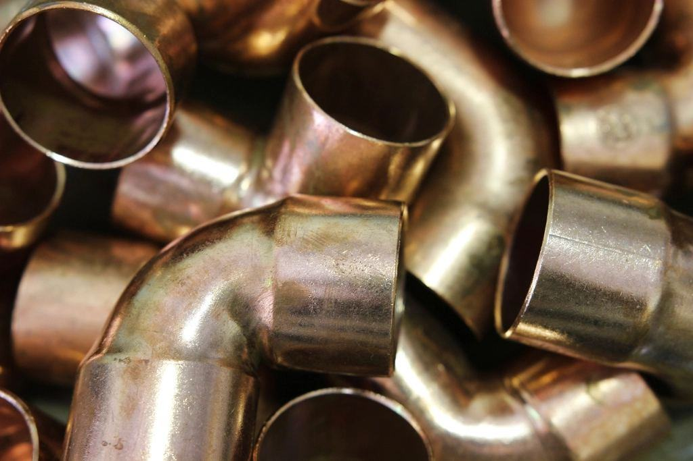

Referenser
Ett urval av uppdrag vi har utfört.
- 2026

Trygghetsboendet Strandängen
Duschplatser utan kant, duschtoaletter och handtag förankrade i nya regelväggar.
- 2025

Villa i Lindsdal
Badkaret ersattes med duschplats och dörren breddades till 90 centimeter för rullstol.
- 2025

Radhus i Nybro
Paret byggde om i tid – med förstärkta väggar för handtag som ännu inte behövs.
- 2026

Lägenhet på Kvarnholmen
Termostatblandare, toalettförhöjning och tre handtag monterade dagen före hemgång.
- 2024

Brf Seniorgården Norrliden
Föreningen valde att erbjuda alla medlemmar duschtoalett till samma pris.
- 2024

Gård i Borgholm
Nytt badrum i bottenplan så att en lantbrukare med MS kunde bo kvar på gården.
Familjer och anhöriga om oss
Annelie R. · Kalmar”Pappa kom hem från sjukhuset på en fredag. På torsdagen hade Ledstången redan monterat allt han behövde för att kunna duscha.”
Sven-Erik T. · Nybro”De skötte hela ansökan till kommunen. Jag behövde bara skriva under och koka kaffe.”
Birgitta och Lennart F. · Lindsdal”Vi valde att bygga om innan vi behövde. Nu vet vi att vi kan bo kvar i radhuset även med rollator.”